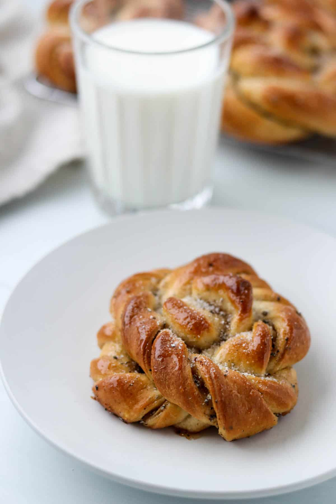

Kardemummabullar

Description
After a recent trip to Stockholm, I became obsessed with creating an easy recipe for perfect, authentic Swedish cardamom buns (kardemummabullar). Soft, fluffy and bursting with cardamom flavor, these buns are the happy result of my efforts.
I wanted to recreate the Stockholm bakery experience at home in my own kitchen so that you can too! This recipe for cardamom buns is so simple and produces buns that are as good (if not better than) those that I enjoyed in Sweden (believe me, I did my research. I ate ALL THE BUNS).
Ready to make a batch of really delicious cardamom buns? I've got tips and tricks that will ensure that your buns are the very best ever! Let's bake!
Ingredients:
- All-purpose flour forms the base of this recipe.
- Just a ¼ cup of granulated sugar brings a welcome sweetness to the dough (without making them too sweet), and a teaspoon of salt rounds out all of the flavors.
- Milk and butter add moisture and rich flavor, and an egg brings structure.
- Instant yeast is the leavener in this recipe. See the FAQ section below for more information about instant yeast and how to substitute active dry yeast if you prefer.
- Cardamom seeds bring quintessential Scandinavian flavor to these buns. Note that the cardamom called for in this recipe is decorticated cardamom seeds (which are simply cardamom seeds that have removed from the pods). These whole seeds are then ground and used in the recipe. You can substitute ground cardamom here, but the whole seeds really deliver the very best flavor and a bit of texture as they are not as finely ground as the powdery pre-ground cardamom.
- Brown sugar (and more butter and cardamom) make up the gooey, delicious filling.
- A final brush of sweet syrup (a combination of light corn syrup and water) followed by (you guessed it) MORE cardamom and sugar finishes these buns off perfectly.
Steps
- Make the Dough:
Begin by making the tangzhong: Combine 5 tablespoons of water, 5 tablespoons of milk and 3 tablespoons of flour in a saucepan. Whisk to combine. Heat over medium, stirring constantly, until the mixture turns into a thick paste. Set aside to cool.
Milk in a saucepan next to a whisk.
Tangzhong in a saucepan with a whisk.
-
Melt the butter and warm the milk. Set both aside to cool slightly. Whisk the dry ingredients together by hand in a stand mixer bowl.
Add the cooled tangzhong, milk, butter and the egg. Using the dough hook attachment, mix the dough on medium-low until it just comes together. Increase the speed to medium and knead the dough until it is soft and clears the sides and bottom of the bowl, about 4-5 minutes. (You can certainly knead by hand instead, but it will take longer, more like 8-10 minutes). Cover and set in a warm spot to rise until about doubled in size, 1 ½ to 2 hours.
Cardamom dough in a metal bowl.
Risen cardamom dough in a metal bowl.
-
Make the Filling and Shape the Buns:
Combine all of the filling ingredients in a medium bowl. Mix with a fork until thoroughly combined.
- Transfer the risen dough to a a clean work surface (no need to flour it). Roll the dough into a rectangle that is about 18-20 inches wide and 16 inches tall.
- Spread the filling in a thin, even layer or the bottom half of the rolled out dough rectangle.
- Fold the top half down over the lower half. Roll the folded dough a few times to help everything flatten and adhere. Cut the dough into 12 evenly-sized strips that are about 8 inches in length. A pizza wheel works great for this!
Person rolling out bun dough on a gray counter.
Strips of cardamom dough next to a pizza wheel.
-
Start with one strip of dough. Using your pizza wheel, make a slit up the center of the dough strip until there is just about ¾ of an inch at the top. The strip of dough will look like a tall pair of pants. Leaving the dough strip on the countertop, twist each "leg" a few times using the thumb and forefinger of each hand.
Strip of cardamom dough cut down the center.
Cardamom bun being shaped next to a pizza wheel.
-
Loosely wrap one of the twisted legs up and around the top of the pants, followed by the other leg, securing the bottom of the last leg by coming up and through the center of the bun.
A Swedish Cardamom Bun in the process of being shaped.
Unbaked cardamom bun on a kitchen counter.
Transfer each shaped bun to a rimmed baking sheet lined with parchment paper. Each baking sheet will hold 6 buns so you will need two baking sheets for a full recipe. Loosely cover the buns with plastic wrap and allow them to rise again for about 45 minutes.
Unbaked cardamom buns on a baking sheet.
-
Bake and Finish the Buns:
Preheat the oven to 400 degrees (make sure the oven rack is in the middle position) while the buns are rising. Once the buns have risen, remove the plastic wrap and put one of the baking sheets in the oven and bake until the buns are golden brown, about 12-16 minutes. Remove the buns from the oven and cover with a clean tea towel while they cool. This traps the excess moisture in and helps keep the buns soft. Repeat with the second baking sheet.
Heat 3 tablespoons of light corn syrup and 1 tablepoon of water in the microwave or on the stove until bubbling. Combine 3 tablespoons of sugar with 1 teaspoon of cardamom in a small bowl. Brush the syrup over the buns and sprinkle each bun with cardamom sugar. Serve immediately!
- Success!